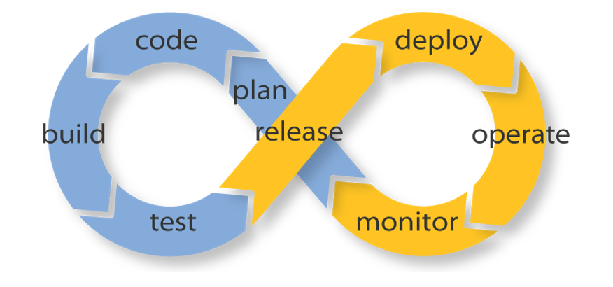

Вечканов Алексей
- Фронтенд-разработчик
- Учусь и учу других
- Занимаюсь своими проектами
Пытаемся упростить себе жизнь


И многое другое...
Но как же большинство деплоят свои проекты?

Travis CI
Continuous Integration
Что может Travis?
Атоматичекский деплой
Запуск тестов
Travis тесно связан с Github

Деплой на Github pages
Здесь небольшое видео или gif о процессе
Деплой на собственный хостинг

Придется повозиться

Тесты

Заключение
- Один раз настроив, забываем о ручном деплое
- Повышаем безопасность проета с помощью тестов
- Получаем удобную возможность управления проектами
- Знания